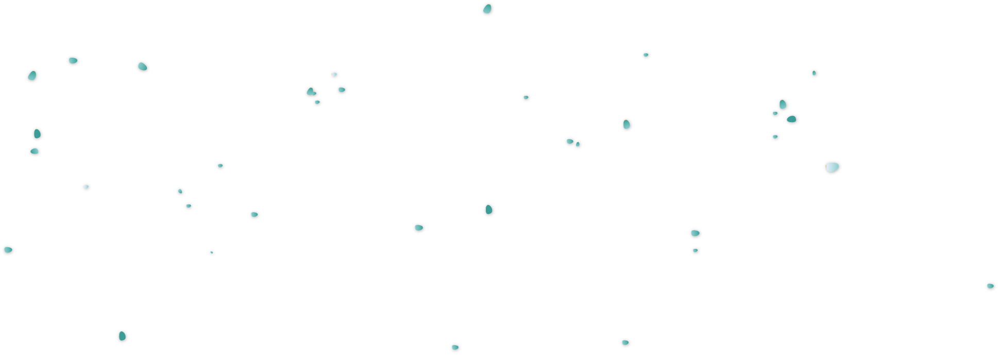
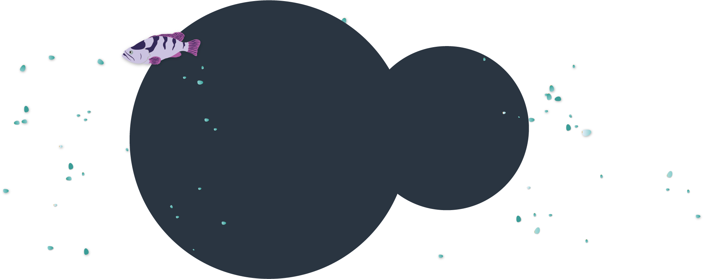
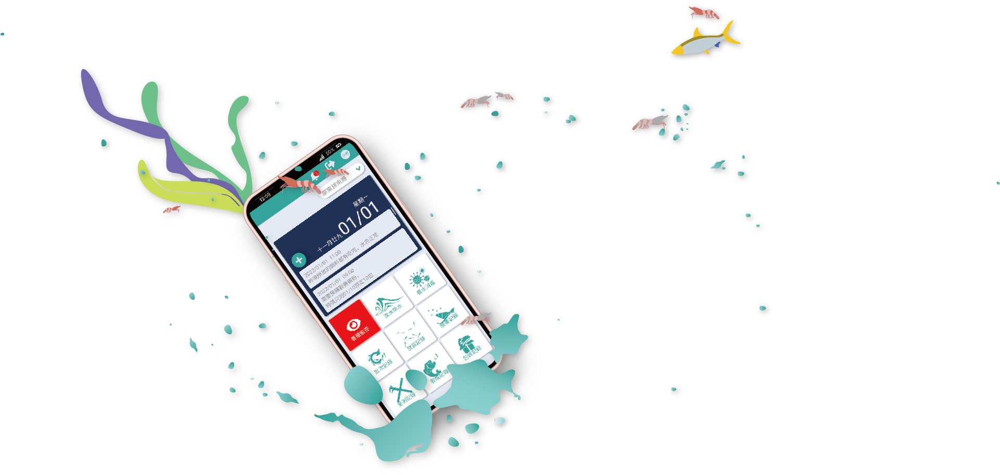
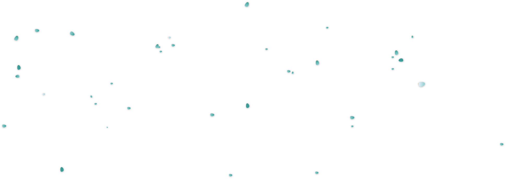
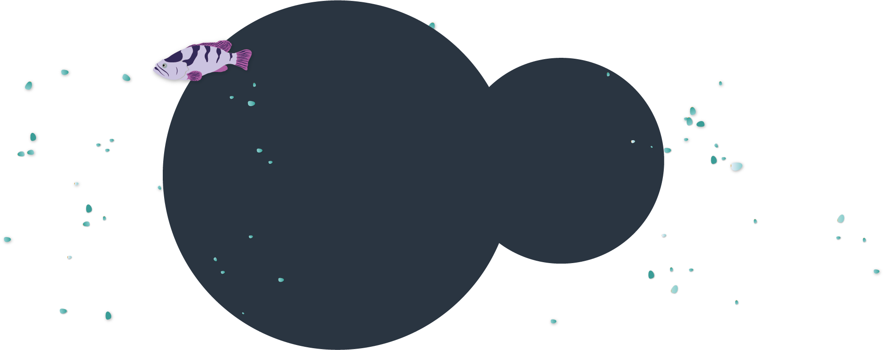
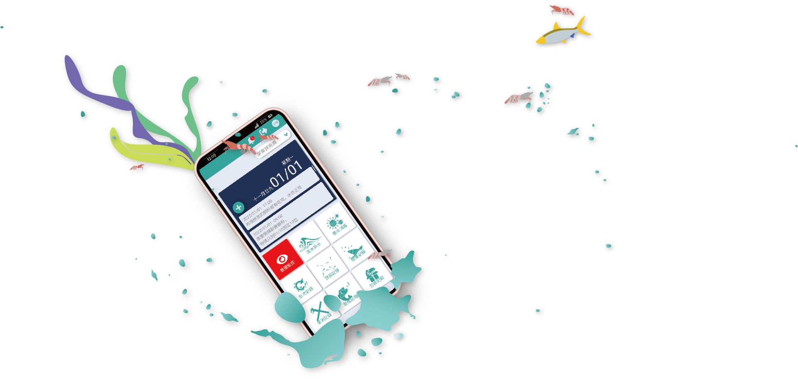

Carry the entire aquaculture farm
We have a smart farming website, but it's not practical for busy fishermen to input feeding records on a computer. So we made a simple app for them.
Based on user feedback, we simplified necessary functions such as aquaculture operations and environmental input into the app. and, complicated features such as cost calculation and report output still require on the computer. In past, records were kept on paper or input into a computer based on memory after the work. However, people tend to be lazy, they often forget or don't enter the forms on time. The app is designed to reduce the time spent sitting in front of the computer after work. That's why I limited all the actions within a maximum of six steps, in order to minimize any unpleasantness caused by overly complicated processes.
Our partners
We have an excellent product manager, a imaginative UI/UX designer, a humorous app engineer, and a logical and meticulous back-end engineer.
As a UI/UX designer, I'm responsible for conducting user interviews, designing user flows, creating interfaces, conducting usability testing, and gathering feedback.